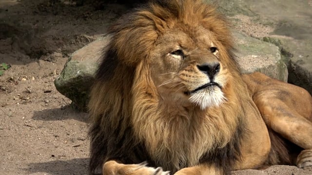

Leão
Os leões são grandes felinos conhecidos como os "reis da selva", embora seu habitat principal sejam as savanas e pradarias da África. Vivendo em grupos sociais chamados de "alcateias" ou "bandos", os leões são únicos entre os grandes felinos por sua organização social. Esses bandos são compostos principalmente de fêmeas caçadoras, enquanto os machos defendem o território..

Os leões são predadores poderosos, alimentando-se de grandes herbívoros como zebras, gnus e búfalos. Suas caçadas são coordenadas, aproveitando a força do grupo para capturar presas. Além de sua força, os leões são reconhecidos por suas imponentes jubas, que conferem aos machos um aspecto majestoso.
